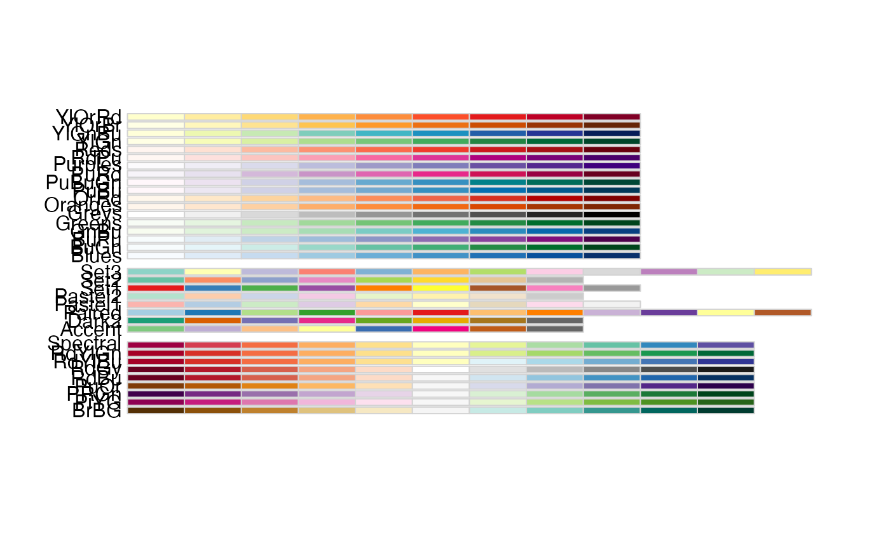

ColorBrewer palettes
ColorBrewer.RdCreates nice looking color palettes especially for thematic maps
Usage
brewer.pal(n, name)
display.brewer.pal(n, name)
display.brewer.all(n=NULL, type="all", select=NULL, exact.n=TRUE,
colorblindFriendly=FALSE)
brewer.pal.infoArguments
- n
Number of different colors in the palette, minimum 3, maximum depending on palette
- name
A palette name from the lists below
- type
One of the string "div", "qual", "seq", or "all"
- select
A list of names of existing palettes
- exact.n
If TRUE, only display palettes with a color number given by n
- colorblindFriendly
if TRUE, display only colorblind friendly palettes
Details
brewer.pal makes the color palettes from ColorBrewer
available as R palettes.
display.brewer.pal() displays the selected palette in a graphics window.
display.brewer.all() displays the a few palettes simultanueously in a graphics window.
brewer.pal.info returns information about the available palettes as a dataframe.
brewer.pal.info is not a function, it is a variable. This might change in the future.
For details and an interactive palette selection tools see http://colorbrewer.org. It is free to use, although ColorBrewer's designers would appreciate it if you could cite the ColorBrewer project if you decide to use one of our color schemes.
There are 3 types of palettes, sequential, diverging, and qualitative.
1. Sequential palettes are suited to ordered data that progress from low to high.
Lightness steps dominate the look of these schemes, with light colors for low data values
to dark colors for high data values.
2. Diverging palettes put equal emphasis on mid-range critical values and extremes at both ends
of the data range. The critical class or break in the middle of the legend is emphasized
with light colors and low and high extremes are emphasized with dark colors that have
contrasting hues.
3. Qualitative palettes do not imply magnitude differences between legend classes,
and hues are used to create the primary visual differences between classes.
Qualitative schemes are best suited to representing nominal or categorical data.
The sequential palettes names are
Blues
BuGn
BuPu
GnBu
Greens
Greys
Oranges
OrRd
PuBu
PuBuGn
PuRd
Purples
RdPu
Reds
YlGn
YlGnBu
YlOrBr
YlOrRd
All the sequential palettes are available in variations from 3 different values up to 9 different values.
The diverging palettes are
BrBG
PiYG
PRGn
PuOr
RdBu
RdGy
RdYlBu
RdYlGn
Spectral
All the diverging palettes are available in variations from 3 different values up to 11 different values.
For qualitative palettes, the lowest number of distinct values available always is 3, but the largest number is different for different palettes. It is given together with the palette names in the following table.
| Accent | 8 |
| Dark2 | 8 |
| Paired | 12 |
| Pastel1 | 9 |
| Pastel2 | 8 |
| Set1 | 9 |
| Set2 | 8 |
| Set3 | 12 |
ColorBrewer is
Copyright (c) 2002 Cynthia Brewer, Mark Harrower, and The Pennsylvania State University.
All rights reserved.
The ColorBrewer palettes have been included in this R package with permission of the copyright holder.
For license details see the file COPYING included in this package.
Value
A palette
You will get an error when you ask for a nonexisting palette, and you will get a warning if a palette you asked for exists but not with as many different leves as you asked for.
Author
Erich Neuwirth, University of Vienna, erich.neuwirth@univie.ac.at, with contributions by John Maindonald, Australian National University, john.maindonald@anu.edu.au
Note
More information on ColorBrewer is available at its Website, http://www.colorbrewer.org.
Examples
## create a sequential palette for usage and show colors
mypalette<-brewer.pal(7,"Greens")
image(1:7,1,as.matrix(1:7),col=mypalette,xlab="Greens (sequential)",
ylab="",xaxt="n",yaxt="n",bty="n")
## display a divergent palette
display.brewer.pal(7,"BrBG")
devAskNewPage(ask=TRUE)
## display a qualitative palette
display.brewer.pal(7,"Accent")
devAskNewPage(ask=TRUE)
## display a palettes simultanoeusly
display.brewer.all(n=10, exact.n=FALSE)
devAskNewPage(ask=TRUE)
display.brewer.all(n=10)
devAskNewPage(ask=TRUE)
display.brewer.all()

devAskNewPage(ask=TRUE)
display.brewer.all(type="div")
devAskNewPage(ask=TRUE)
display.brewer.all(type="seq")
 devAskNewPage(ask=TRUE)
display.brewer.all(type="qual")
devAskNewPage(ask=TRUE)
display.brewer.all(n=5,type="div",exact.n=TRUE)
devAskNewPage(ask=TRUE)
display.brewer.all(colorblindFriendly=TRUE)
devAskNewPage(ask=TRUE)
brewer.pal.info
#> maxcolors category colorblind
#> BrBG 11 div TRUE
#> PiYG 11 div TRUE
#> PRGn 11 div TRUE
#> PuOr 11 div TRUE
#> RdBu 11 div TRUE
#> RdGy 11 div FALSE
#> RdYlBu 11 div TRUE
#> RdYlGn 11 div FALSE
#> Spectral 11 div FALSE
#> Accent 8 qual FALSE
#> Dark2 8 qual TRUE
#> Paired 12 qual TRUE
#> Pastel1 9 qual FALSE
#> Pastel2 8 qual FALSE
#> Set1 9 qual FALSE
#> Set2 8 qual TRUE
#> Set3 12 qual FALSE
#> Blues 9 seq TRUE
#> BuGn 9 seq TRUE
#> BuPu 9 seq TRUE
#> GnBu 9 seq TRUE
#> Greens 9 seq TRUE
#> Greys 9 seq TRUE
#> Oranges 9 seq TRUE
#> OrRd 9 seq TRUE
#> PuBu 9 seq TRUE
#> PuBuGn 9 seq TRUE
#> PuRd 9 seq TRUE
#> Purples 9 seq TRUE
#> RdPu 9 seq TRUE
#> Reds 9 seq TRUE
#> YlGn 9 seq TRUE
#> YlGnBu 9 seq TRUE
#> YlOrBr 9 seq TRUE
#> YlOrRd 9 seq TRUE
brewer.pal.info["Blues",]
#> maxcolors category colorblind
#> Blues 9 seq TRUE
brewer.pal.info["Blues",]$maxcolors
#> [1] 9
devAskNewPage(ask=TRUE)
display.brewer.all(type="qual")
devAskNewPage(ask=TRUE)
display.brewer.all(n=5,type="div",exact.n=TRUE)
devAskNewPage(ask=TRUE)
display.brewer.all(colorblindFriendly=TRUE)
devAskNewPage(ask=TRUE)
brewer.pal.info
#> maxcolors category colorblind
#> BrBG 11 div TRUE
#> PiYG 11 div TRUE
#> PRGn 11 div TRUE
#> PuOr 11 div TRUE
#> RdBu 11 div TRUE
#> RdGy 11 div FALSE
#> RdYlBu 11 div TRUE
#> RdYlGn 11 div FALSE
#> Spectral 11 div FALSE
#> Accent 8 qual FALSE
#> Dark2 8 qual TRUE
#> Paired 12 qual TRUE
#> Pastel1 9 qual FALSE
#> Pastel2 8 qual FALSE
#> Set1 9 qual FALSE
#> Set2 8 qual TRUE
#> Set3 12 qual FALSE
#> Blues 9 seq TRUE
#> BuGn 9 seq TRUE
#> BuPu 9 seq TRUE
#> GnBu 9 seq TRUE
#> Greens 9 seq TRUE
#> Greys 9 seq TRUE
#> Oranges 9 seq TRUE
#> OrRd 9 seq TRUE
#> PuBu 9 seq TRUE
#> PuBuGn 9 seq TRUE
#> PuRd 9 seq TRUE
#> Purples 9 seq TRUE
#> RdPu 9 seq TRUE
#> Reds 9 seq TRUE
#> YlGn 9 seq TRUE
#> YlGnBu 9 seq TRUE
#> YlOrBr 9 seq TRUE
#> YlOrRd 9 seq TRUE
brewer.pal.info["Blues",]
#> maxcolors category colorblind
#> Blues 9 seq TRUE
brewer.pal.info["Blues",]$maxcolors
#> [1] 9